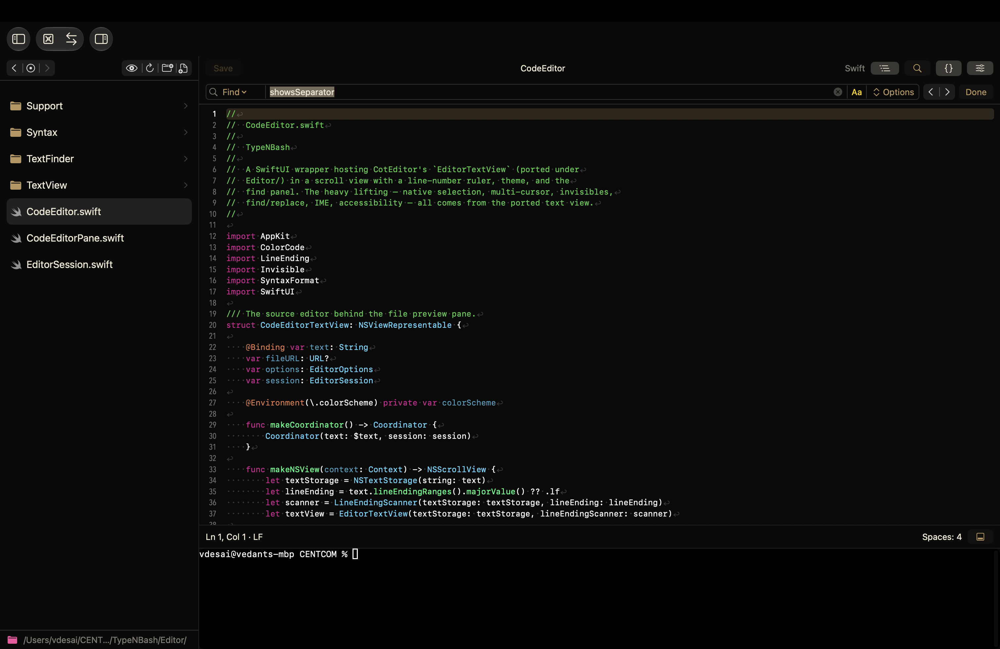
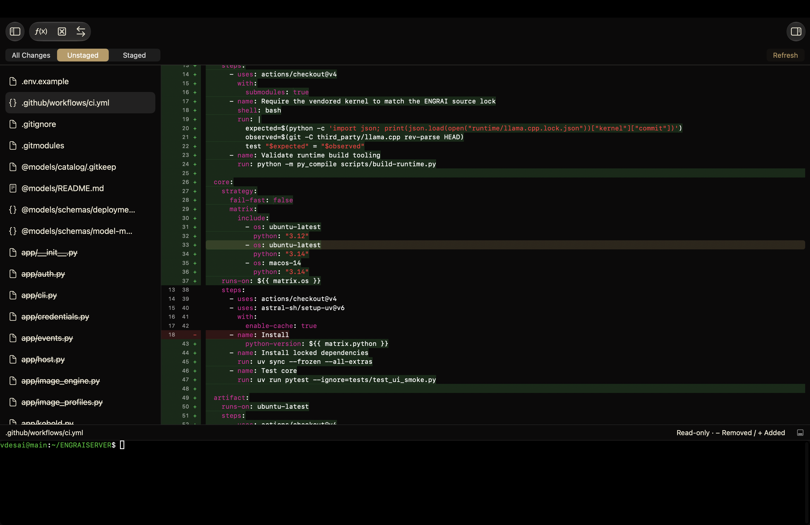
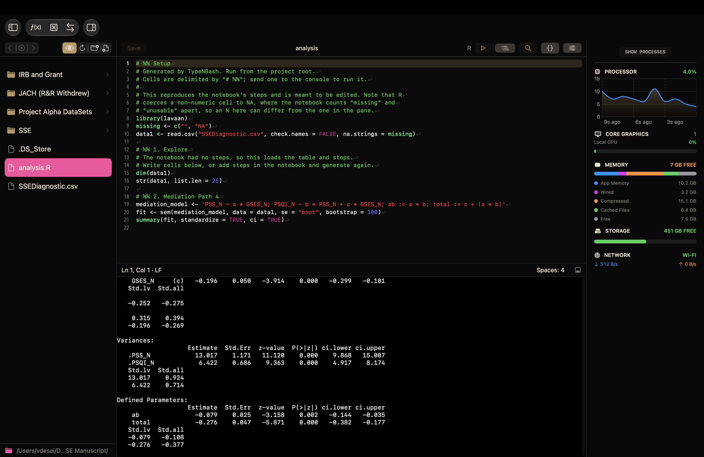

Edit & Execute
Syntax highlighting, find and replace, and a console beside your editor. Send a selection or a # %% cell to the console without switching applications.
A native workspace for macOS
Code. Command. Research. Analyze. Develop.
All In One Place. All in One App.
Write a script, work on a remote machine, or explore a dataset. Bring your editor, terminal, files, and statistical notebook together in a native Mac workspace.

Keep your Context
Syntax highlighting, find and replace, and a console beside your editor. Send a selection or a # %% cell to the console without switching applications.
Open a folder on your Mac or connect over SSH. Browse remote files and use a remote terminal, with saved connection profiles and key, agent, or password authentication.
A project carries its name and output location with its folder. Create a new project, initialize an existing directory, or open an ordinary folder as it is.
Project GuideInspect diffs, stage files, commit, fetch, and push in local projects and over SSH. Just log in privately with your GitHub remote API, or use a local email to commit changes. Rest easy knowing your work is safe.
Secure, safe, and private. TypeNBash embraces a future of agentic LLMs while giving users the agency to choose their agents. Hook your BYOK LLM and let TypeNBash be the amazing harness.
Markdown? Embedded Markdown previews help you write long documents and manuscripts. Harness the power of the CiteTex extension to also retrieve citations from an open Safari tab straight to your BibTeX library. Simply run a pandoc or LaTeX script yourself to convert to a formatted manuscript.
Data Analysis
Explore an editable table from any CSV file, filter the rows, inspect columns, and build an analysis step-by-step in Notebook. Native statistics run without a Python or R installation; all written from scratch using Swift Foundation and Accelerate for macOS.
Descriptive Statistics, Frequencies, Cross-Tabulations.
One-Sample, Independent-Samples, Paired t-tests, and ANOVAs.
Pearson and Spearman Correlations, Linear Regression Models, and Chi-Square Tests.
Export a Markdown report or generate an R script to run in your project console.
A Closer Look


Make TypeNBash Yours
"Because I surely did write this website, my portfolio, software projects, and even my dissertation on TypeNBash. One cannot build a product if one does not use it themselves."
Vedant A. Desai - The Developer